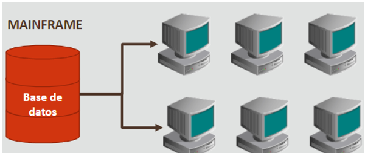

Base Datos

En este apartado veremos información de base de datos, presentaremos un proyecto realizado en JAVA utilizando como IDE "eclipse" y SQL para la manipulación de datos, definición de datos, consulta de datos y control de Datos. para dar inicio a esto es importante escalar la importancia de las bases de datos, para esto daremos un breve repaso sobre la computación y como a influido las bases de datos a traves del tiempo.
TRANSFORMACIÓN DE LA COMPUTACIÓN
1970 mainframe
En esta epoca se utilizaron computadoras pequeñas o tambien llamadas terminales elementales, estas computadoras se conectaban a un mainframe "base de datos" para poder ejecutar comandos y obtener información. ¿Qué problemas existian? debido a que el poder de computación en ese tiempo era aun muy deficiente, cada computadora o terminal debia esperar a que terminara la operación que se esta ejecutando en el mainframe para poder realizar mas procesos lo que en consecuencia a esto se volvia un derroche de tiempo.
